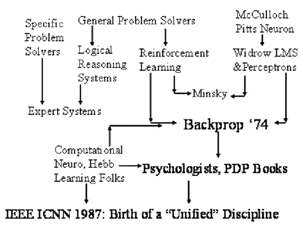
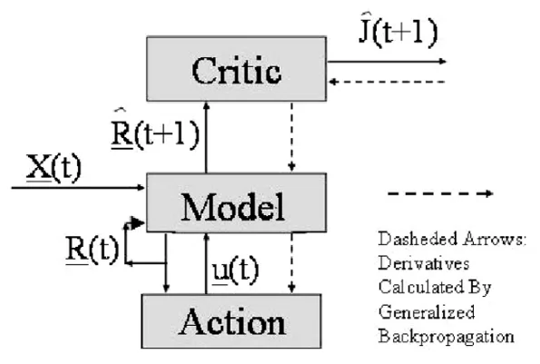
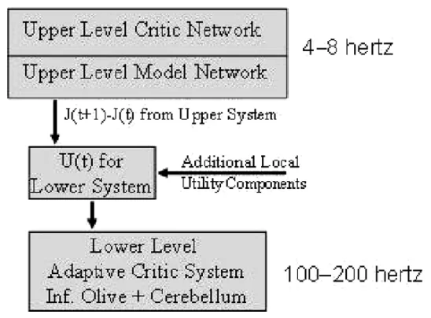
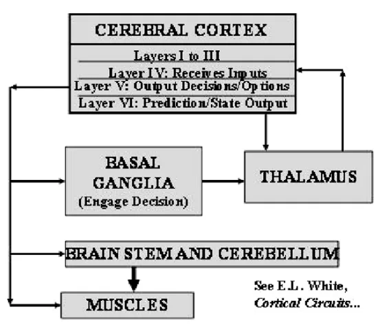
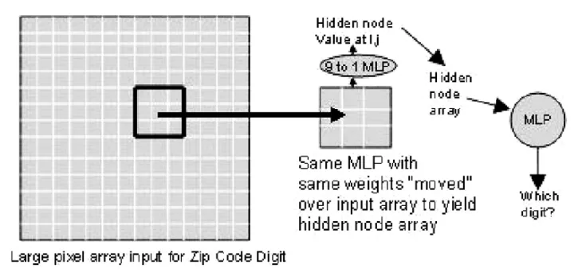

dựa trên các kết quả mà những hành động đó có thể mang lại. Chức năng của bộ não là đưa ra những lựa chọn mang lại kết quả tốt hơn. Trí tuệ là khả năng học cách đưa ra những lựa chọn tốt hơn.
Để đưa tất cả những điều này vào toán học, chúng ta phải có một cách thức để đánh giá xem kết quả nào là “tốt hơn” so với kết quả nào khác. Khái niệm Hàm lợi ích chủ yếu (Cardinal Utility function) của Von Neumann [9] cung cấp thước đo đó; nó là nền tảng của lý thuyết quyết định [10], phân tích rủi ro, phân tích đầu tư hiện đại, quy hoạch động, cùng nhiều lĩnh vực khác. Trước Von Neumann, hầu hết các nhà kinh tế học tin rằng các giá trị hoặc sở thích (của người tiêu dùng) hoàn toàn là một mối quan hệ thứ bậc (ordinal relationship); chẳng hạn, bạn có thể chứng minh bằng thực nghiệm rằng hầu hết mọi người thích bít tết hơn hamburger, và họ thích hamburger hơn là không có gì, nhưng có vẻ vô nghĩa khi lập luận rằng “khoảng cách giữa hamburger và không có gì lớn hơn khoảng cách giữa bít tết và hamburger.” Von Neumann đã chỉ ra rằng chúng ta có thể thực hiện những phép so sánh định lượng như vậy một khi đưa xác suất vào cách tư duy của mình. Ví dụ, nếu được chọn giữa việc tung đồng xu 50-50 để nhận bít tết hoặc không có gì, so với việc chắc chắn nhận được hamburger, nhiều người sẽ chọn hamburger. Tất nhiên, một hàm lợi ích đầy đủ hơn cho người tiêu dùng là con người sẽ cần tính đến cả các biến số khác nữa.
Thông thường, khi nói về các “mục tiêu” hay “ý định” rời rạc, chúng ta không nói về các giá trị dài hạn của sinh vật. Thay vào đó, chúng ta đang nói về các mục tiêu phụ hoặc các giá trị chiến thuật, vốn nhằm mục đích mang lại những kết quả hoặc đầu ra tốt hơn. Hàm lợi ích định nghĩa thế nào là “tốt hơn” chính là nền tảng của toàn bộ hệ thống.
Tiếp theo, hãy xem xét sự tương đồng với vật lý học. Vào năm 1971–1972, khi tôi đề xuất một mô hình trí tuệ thế hệ đầu tiên dựa trên ADP cho một nhà khoa học thần kinh nổi tiếng, ông ấy đã phản đối: “Vấn đề của loại mô hình này là nó tạo ra một góc nhìn nhân hình hóa (anthropomorphic) về cách bộ não hoạt động. Tôi đã dành cả đời để dạy mọi người cách vượt qua góc nhìn lưỡng cư hóa (bachtriomorphic) về loài ếch. Suy nghĩ về con người bằng sự thấu cảm có thể là một thảm họa đối với khoa học. Hơn nữa, ngay cả trong vật lý, chúng ta biết rằng vũ trụ đang tối đa hóa một loại hàm lợi ích nào đó, và chúng ta đâu có nghĩ về vũ trụ theo cách nhân hình hóa.”
Từ một góc nhìn hoàn toàn khách quan, lập luận của ông ấy thực ra lại ủng hộ ý tưởng thử sử dụng tối ưu hóa làm nguyên lý tổ chức trung tâm trong khoa học thần kinh. Xét cho cùng, nếu nó hiệu quả trong vật lý học theo một cách cực kỳ chặt chẽ và cụ thể, tại sao lại không thể ở đây? Nếu chúng ta có thể hợp nhất sự hiểu biết chức năng về bộ não không chỉ với kỹ thuật, mà còn với trải nghiệm chủ quan và sự thấu cảm, chẳng phải đây sẽ là một nguồn sức mạnh lớn sao, miễn là chúng ta phân biệt rạch ròi cái nào là cái nào? Thực tế, mục tiêu thực sự của tôi ở đây là phát triển loại hình hiểu biết toán học thực sự giúp chúng ta hợp nhất sự hiểu biết điều khiển học, sự hiểu biết khách quan về não bộ và hành vi, cũng như sự hiểu biết chủ quan về bản thân và người khác.
Nhưng trong vật lý học, mọi thứ có thực sự vận hành theo cách đó không? Một phần là vậy. Theo vật lý cổ điển, vũ trụ thực sự giải quyết bài toán tối ưu hóa được mô tả dưới đây:
Vũ trụ có một loại “hàm lợi ích,” L (x, t). Nó “lựa chọn” các trạng thái ö của mọi hạt và trường tại mọi thời điểm t bằng cách chọn những trạng thái tối đa hóa tổng của L trên toàn bộ không-thời gian, giữa thời điểm t− và thời điểm t+, với điều kiện chúng tạo thành một đường đi liên tục từ trạng thái cố định tại một thời điểm ban đầu t− đến một thời điểm kết thúc t+. Hình thức luận thanh lịch này, nhờ công của Lagrange, cung cấp một mô tả rất đơn giản và súc tích về các định luật vật lý; thay vì phải chỉ định
Hình 2 Minh họa véc-tơ trạng thái ϕ(x, t) tiến hóa giữa các thời điểm t− và t+ ϕ(x, t + )
ϕ(x, t) t+ > t > t − ϕ(x, t −)
n định luật động lực cho n loại hạt hoặc trường, chúng ta có thể chỉ định “hàm Lagrange L,” và suy ra toàn bộ các dự đoán của vật lý từ đó. Để thực hiện phép tính đó, chúng ta có thể sử dụng một phương trình từ vật lý cổ điển, phương trình Hamilton-Jacobi, vốn cho chúng ta biết cách giải các bài toán tối ưu hóa tất định xuyên suốt thời gian hoặc không-thời gian.
Nhưng đó chưa phải là toàn bộ câu chuyện. Hamilton và Lagrange đã có nhiều cuộc tranh luận về việc liệu vũ trụ có thực sự tối đa hóa L hay không – hay nó tối thiểu hóa L, hoặc tìm kiếm một nghiệm minmax? Liệu vũ trụ vật lý có tìm ra một thứ gì đó giống như kết quả của một trò chơi có tổng bằng không giữa hai người? Vào thời điểm của Einstein, có vẻ đúng là như vậy. Lý thuyết lượng tử hiện đại loại bỏ giả định tất định, nhưng lại thêm vào nhiễu loạn ngẫu nhiên theo một cách rất kỳ lạ. Hóa ra chúng ta thực sự có thể khôi phục lại một thứ gần giống ý tưởng ban đầu của Lagrange, vốn khớp với các dự đoán đã được kiểm chứng của lý thuyết lượng tử hiện đại, bằng cách đưa vào một số hạng ngẫu nhiên có tính chất thống kê đối xứng cả trong không gian lẫn thời gian; tuy nhiên, các chi tiết nằm ngoài phạm vi của chương này. (Xem http://www.werbos.com/reality.htm.)
Để mô tả bộ não, việc chỉ sử dụng quy tắc tối ưu hóa cũ của Hamilton và Jacobi là chưa đủ. Chúng ta cần xem xét trường hợp ngẫu nhiên, bởi vì động vật, giống như chúng ta, không thể dự đoán môi trường của mình theo cách tất định. Nền tảng cho việc tối ưu hóa theo thời gian trong trường hợp ngẫu nhiên là phương trình Bellman, một bước đột phá vĩ đại được Bellman phát triển vào năm 1953, và trở nên khả thi nhờ khái niệm Hàm lợi ích chủ yếu của Von Neumann.
Các nguyên lý tối ưu rất quan trọng đối với vật lý cơ bản – nhưng cũng quan trọng đối với nhiệt động lực học, và đối với vật lý của các hiện tượng nổi sinh (emergent phenomena) nói chung. Những chi tiết đó nằm ngoài phạm vi của chương này.
Cuối cùng, hãy để tôi giải đáp hai trong số những câu hỏi phổ biến nhất mà mọi người thường đặt ra khi tôi nói về bộ não như một “cỗ máy tối ưu hóa.”
Thứ nhất: Nếu bộ não tối ưu đến vậy, tại sao con người lại làm nhiều điều ngu ngốc đến thế? Trả lời: Bộ não được thiết kế để học một chính sách tối ưu gần đúng, một cách hiệu quả nhất có thể với nguồn tài nguyên tính toán hữu hạn (các mạng lưới nơ-ron), xuất phát từ một điểm khởi đầu kém tối ưu hơn. Chúng không bao giờ học được cách chơi một ván cờ vua hoàn hảo (máy tính của chúng ta cũng vậy, và bất kỳ thuật toán nào khác có thể triển khai trên một máy tính thực tế cũng vậy) do những giới hạn về tài nguyên tính toán. Chúng ta chỉ làm tốt nhất có thể mà thôi.
Ngoài ra, khi một người (một nhà nghiên cứu) chỉ trích người khác, chúng ta đang chứng kiến sự so sánh giữa hai hệ thống cực kỳ thông minh. Một số bộ não học nhanh hơn những bộ não khác. Theo quan điểm của tôi, bản thân con người chỉ là một trạng thái trung gian hướng tới một trí tuệ cao hơn/nhanh hơn nữa, như được thảo luận trong các Phụ lục của bài viết này.
Câu hỏi thứ hai: Nếu lý thuyết tối ưu hóa về bộ não này là đúng, chẳng phải bộ não sẽ bị mắc kẹt trong các cực tiểu địa phương (local minima), giống như các chương trình tối ưu hóa nhân tạo khi đối mặt với một môi trường phi tuyến phức tạp sao? Trả lời: Đúng là chúng bị mắc kẹt thật. Mọi người trên trái đất đều bị kẹt trong một “cực tiểu địa phương,” hay một lối mòn, ở một mức độ nào đó. Nói cách khác, tất cả chúng ta đều có thể làm tốt hơn một chút nếu có nhiều sự sáng tạo hơn. Nhưng hãy nhìn những anh bạn lông lá kia (tinh tinh) trong rừng rậm xem, và nhìn xem chúng đang kẹt trong lối mòn nào!
Lý thuyết tối ưu hóa về bộ não ngụ ý rằng bộ não của chúng ta kết hợp giữa khả năng học tập gia tăng (incremental learning) với khả năng học cách trở nên sáng tạo hơn – để thực hiện “tìm kiếm ngẫu nhiên” (stochastic search) ngày càng tốt hơn đối với các lựa chọn sẵn có. Có một vài nhà nghiên cứu trong lĩnh vực tính toán tiến hóa hoặc tìm kiếm ngẫu nhiên nói với chúng ta rằng thuật toán của họ được đảm bảo sẽ tìm thấy cực trị toàn cục (global optimum), rốt cuộc là vậy; tuy nhiên, những đảm bảo kiểu đó không thực tế lắm bởi vì, đối với một hệ thống có độ phức tạp thực tế, chúng đòi hỏi một khoảng thời gian thiên văn mới thực sự đạt tới điểm tối ưu.
2.2 Tính tối ưu và ADP trong công nghệ
Những lợi ích của quy hoạch động thích nghi (ADP) đối với công nghệ đã được nhiều tác giả khác thảo luận trong quá khứ [11], kèm theo các ví dụ cụ thể. Ở đây tôi sẽ chỉ điểm lại một vài nét nổi bật. (Xem thêm ví dụ về lưới điện, được thảo luận ở cuối phần Phụ lục.)
Nhiều kỹ sư điều khiển hỏi: “Tại sao phải cố tìm bộ điều khiển tối ưu trong số tất cả các bộ điều khiển có thể? Chỉ riêng việc giữ cho mọi thứ không phát nổ – ổn định chúng tại một điểm cố định – đã đủ khó rồi.” Trên thực tế – những bộ điều khiển thực sự ổn định nhất được biết đến hiện nay là các bộ điều khiển phản hồi phi tuyến, dựa trên việc “giải” phương trình “Hamilton-Jacobi-Bellman.” Nhưng để triển khai loại điều khiển đó, chúng ta cần các cơ chế để “giải bằng phương pháp số” (xấp xỉ) phương trình Bellman chính xác nhất có thể. ADP chính là bộ máy để làm điều đó.
Hơn nữa – có những lúc không thể đưa ra một sự đảm bảo tuyệt đối thực sự trung thực về tính ổn định, dưới các giả định chính xác. Chắc chắn là một con chuột chạy qua cánh đồng không có cách nào đảm bảo sự sống còn của nó – và cả loài người nói chung cũng vậy, khi đối mặt với những thách thức đang bày ra trước mắt chúng ta hiện nay. (Xem www.werbos.com.) Trong loại tình huống thực tế đó, thách thức là tối đa hóa xác suất sống sót; điều đó, đến lượt nó, lại là một bài toán tối ưu hóa ngẫu nhiên, phù hợp với ADP chứ không phù hợp với các phương pháp tất định. (Công trình gần đây của Gosavi đã khám phá nhóm ứng dụng ADP này.) Việc kiểm chứng và xác thực đối với các hệ thống phức tạp thực sự trong thế giới thực vốn đã dựa rất nhiều vào các thử nghiệm thực nghiệm và thống kê. Cuối cùng, để giải quyết các bài toán tối ưu hóa phi tuyến trong trường hợp tổng quát, chúng ta nhất thiết phải sử dụng các bộ xấp xỉ hàm phi tuyến vạn năng. Chúng có thể là chuỗi Taylor – nhưng nhiều năm trước, Barron đã chỉ ra rằng dạng đơn giản nhất của mạng nơ-ron mang lại khả năng xấp xỉ phi tuyến chính xác hơn chuỗi Taylor hay các bộ xấp xỉ hàm cơ sở tuyến tính khác, trong trường hợp tổng quát khi có một số lượng lớn các biến trạng thái. Việc sử dụng các bộ xấp xỉ mạnh mẽ và chính xác hơn (tương thích với phần cứng phân tán, như các chip đa lõi đang nổi lên) là điều thiết yếu để đạt được các xấp xỉ chính xác hơn và kết quả tốt hơn.
3 Các mô hình ADP thế hệ thứ nhất và thứ hai về trí tuệ não bộ
3.1 Nguồn gốc và cơ sở của mô hình thế hệ thứ nhất
Lan truyền ngược (backpropagation) và thiết kế ADP thực thụ đầu tiên đều bắt nguồn từ công trình của tôi vào những năm 1970, như thể hiện trong biểu đồ đơn giản hóa ở Hình 3. Về bản chất, những người sáng lập trí tuệ nhân tạo (AI) – Newell, Shaw và Simon, và Minsky [4] – đã đề xuất rằng chúng ta có thể xây dựng các hệ thống thông minh giống não bộ bằng cách xây dựng các hệ thống học tăng cường (reinforcement learning) mạnh mẽ. Tuy nhiên, sau rất nhiều thử nghiệm, trực giác và tư duy kinh nghiệm, họ vẫn không thể thiết kế được các hệ thống có thể tối ưu hóa nhiều hơn một vài biến số. Biết rằng bộ não có thể xử lý hàng nghìn biến số, họ đơn giản là đã bỏ cuộc – cũng giống như họ đã bỏ cuộc trong việc huấn luyện các mô hình nơ-ron đơn giản hóa (perceptron đa lớp). Cùng khoảng thời gian đó, Amari viết rằng có lẽ đạo hàm có thể được sử dụng bằng cách nào đó để huấn luyện perceptron đa lớp – nhưng cho rằng điều đó khó có thể thành công, và không đưa ra bất kỳ thuật toán nào để thực sự tính toán các đạo hàm cần thiết theo cách phân tán, cục bộ.
Năm 1964, tôi – cũng như nhiều người khác – đã được truyền cảm hứng sâu sắc từ cuốn sách kinh điển về trí tuệ của Hebb [5]. Lấy cảm hứng từ các công trình thực nghiệm về tác động khối (mass action) và sự học trong não bộ (của Lashley, Freeman, Pribram và những người khác), ông đề xuất rằng chúng ta thực sự không cần một mô hình quá phức tạp để giải thích hoặc tái tạo trí tuệ giống não bộ. Có lẽ chúng ta có thể tạo ra trí tuệ như là kết quả nổi sinh của quá trình học tập; chúng ta chỉ cần xây dựng hàng tỷ nơ-ron mô hình, mỗi nơ-ron tuân theo một loại quy tắc học tập nơ-ron vạn năng nào đó, và sau đó trí tuệ có thể nổi lên hoàn toàn từ việc học. Tôi đã cố gắng rất nhiều để làm cho ý tưởng đó hoạt động vào những năm 1960, và đã thất bại.

Hình 3 Góc nhìn lịch sử về sự ra đời của lan truyền ngược và ADP Vấn đề cốt lõi là cách tiếp cận của Hebb đối với một quy tắc học tập vạn năng về cơ bản là tính toán các hệ số tương quan; chúng đủ tốt để xây dựng các bộ nhớ liên kết hữu ích, như Grossberg đã chỉ ra, nhưng không đủ để đưa ra các dự đoán thống kê tốt hoặc điều khiển tối ưu. Tự bản thân chúng đơn giản là không đủ để cho phép xây dựng một cỗ máy học tăng cường đa năng hiệu quả.
Đến năm 1971–1972, tôi nhận ra rằng tầm nhìn của Hebb có thể đạt được, nếu chúng ta nới lỏng nó đi một chút xíu. Hoàn toàn có thể thiết kế một cỗ máy học tăng cường đa năng, nếu chúng ta cho phép chỉ ba loại nơ-ron và ba quy tắc học tập nơ-ron tổng quát, thay vì chỉ một.
Thực ra, nhận thức then chốt ở đây đã đến từ năm 1967. Vào năm 1967 (trong một bài báo xuất bản năm 1968 [14]), tôi đã đề xuất rằng chúng ta có thể khắc phục các vấn đề của học tăng cường bằng cách quay trở lại các nguyên lý toán học cơ bản – bằng cách xây dựng các hệ thống học cách xấp xỉ phương trình Bellman. Sử dụng phương trình Bellman vẫn là phương pháp chính xác và hiệu quả duy nhất để tính toán một chiến lược hoặc chính sách hành động tối ưu, cho một bài toán quyết định phi tuyến tổng quát theo thời gian có nhiễu. Phương trình là:
J(x(t)) = Max < U(x(t), u(t)) + J(x(t + 1)) >
1 + r , u(t)
trong đó x(t) là trạng thái của môi trường tại thời điểm t, u(t) là lựa chọn hành động, U là hàm lợi ích chủ yếu, r là lãi suất hoặc tỷ lệ chiết khấu (được định nghĩa chính xác như trong kinh tế học và bởi Von Neumann), dấu ngoặc nhọn biểu thị giá trị kỳ vọng, và J là hàm mà chúng ta phải giải để suy ra chiến lược hành động tối ưu. Tại bất kỳ trạng thái x nào, u tối ưu là giá trị giải quyết bài toán tối ưu hóa trong phương trình này. Một hệ thống học tập có thể học cách xấp xỉ chính sách này bằng cách sử dụng mạng nơ-ron (hoặc bộ xấp xỉ vạn năng khác) để xấp xỉ hàm J và các thành phần then chốt khác của phương trình Bellman, như minh họa trong Hình 4, trích từ đề xuất luận án năm 1971–1972 của tôi tại Harvard:

Hình 4 Hệ thống học tập dựa trên nghiệm xấp xỉ của phương trình Bellman. Trí tuệ nổi sinh là khả thi nếu chúng ta cho phép ba loại nơ-ron [16]
Trong thiết kế đó, tôi cần một dạng tổng quát hóa của lan truyền ngược làm công cụ để tính toán các đạo hàm hoặc hệ số độ nhạy thiết yếu nhằm cho phép việc học gia tăng chính xác của cả ba thành phần. Tôi đã xây dựng và chứng minh một quy tắc dây chuyền (chain rule) mới cho “đạo hàm có thứ tự” (ordered derivatives), cho phép tính toán chính xác các đạo hàm cần thiết xuyên qua bất kỳ loại hệ thống phi tuyến lớn nào, chứ không chỉ riêng mạng nơ-ron.
Về mặt trực giác, mạng “Hành động” (Action) ở đây là mạng thực sự tính toán hoặc quyết định các hành động sẽ được sinh vật thực hiện. Mạng “Mô hình” (Model) học cách dự đoán những thay đổi trong môi trường của sinh vật, và nó cũng học cách ước lượng trạng thái khách quan của thực tại (R), vốn nhiều hơn chỉ là đầu vào cảm giác hiện tại (X) đối với sinh vật. Mạng “Phê bình” (Critic) ước lượng hàm “J”, vốn là một loại hàm giá trị được học, tương tự như cái được gọi là “tăng cường thứ cấp” (secondary reinforcement) trong học tập ở động vật.
Đối với luận án tiến sĩ của mình (được in lại toàn bộ trong [16]), tôi đã đưa vào phần chứng minh, cùng nhiều ứng dụng của lan truyền ngược cho các hệ thống ngoài mạng nơ-ron. Trong [11, 12], tôi đã mô tả cách lan truyền ngược tổng quát có thể được sử dụng trong nhiều ứng dụng đa dạng, bao gồm ADP với các thành phần có thể là mạng nơ-ron hoặc bất kỳ hệ thống khả vi phi tuyến nào khác.
Phương pháp mà tôi đề xuất để thích nghi mạng Phê bình vào năm 1971–1972 được tôi gọi là “Quy hoạch động kinh nghiệm” (Heuristic Dynamic Programming - HDP). Về bản chất, nó giống với cái sau này được gọi là “Phương pháp Sai biệt Thời gian” (Temporal Difference Method). Nhưng tôi đã sớm nhận ra rằng phương pháp này không mở rộng quy mô tốt khi áp dụng cho các hệ thống có độ phức tạp dù chỉ ở mức trung bình. Nó học quá chậm. Để giải quyết vấn đề này, tôi đã phát triển các ý tưởng cốt lõi của hai phương pháp mới – quy hoạch kinh nghiệm kép (DHP) và DHP toàn cục hóa (GDHP) – được công bố trong một loạt bài báo từ năm 1977 đến 1981 [13, 14, 15]. Để chứng minh sự hội tụ, trong [3], tôi đã thực hiện những thay đổi nhỏ nhưng quan trọng trong DHP; do đó [3] là nguồn tham khảo chuẩn xác cho DHP đúng nghĩa. Để xem các phần mở rộng bền vững hơn, hãy xem các phần cuối của [18]. Xem [11] và [3] để biết các đánh giá về ứng dụng thực tế của HDP, DHP, GDHP và các hệ thống phê bình thích nghi liên quan.
4 Mô hình/Thiết kế thế hệ thứ hai cho trí tuệ kiểu não bộ
Đến năm 1987, tôi nhận ra rằng bộ não có những khả năng nhất định vượt xa những gì bất kỳ thiết kế thế hệ thứ nhất nào mang lại. Vì vậy, tôi đã đề xuất [15] một lý thuyết thế hệ thứ hai. Các chi tiết then chốt của lý thuyết đó đã được hoàn thiện trong [3] và trong các bài báo cùng Pellionisz. Xem lưu đồ bên dưới và các bài báo được đăng tải tại www.werbos.com.
Thiết kế thế hệ thứ hai một phần được thúc đẩy bởi nỗ lực thấu hiểu bộ não. Nó cũng được thúc đẩy bởi một tình thế tiến thoái lưỡng nan về mặt kỹ thuật. Tình thế tiến thoái lưỡng nan đó là: khả năng tiên liệu thực sự mạnh mẽ trong một hệ thống ADP đòi hỏi việc sử dụng các Mạng Phê bình và Mạng Mô hình mạnh mẽ hơn nhiều so với các mạng nơ-ron truyền thẳng (hoặc mạng Hebb, chuỗi Taylor hay mạng hàm cơ sở tuyến tính). Nó đòi hỏi việc sử dụng các mạng hồi quy (recurrent networks), bao gồm các mạng “ổn định dần” qua nhiều chu kỳ tính toán vòng trong trước khi phát ra kết quả tính toán. Điều đó, đến lượt nó, đòi hỏi một tần suất lấy mẫu tương đối thấp cho việc tính toán; khoảng 4–8 khung hình mỗi giây là tốc độ quan sát được ở vỏ não của động vật có vú khi phản hồi

với các đầu vào mới từ đồi thị (thalamus), “màn hình chiếu phim” mà phần não trên theo dõi. Tuy nhiên, việc điều khiển cơ trơn đòi hỏi băng thông điều khiển cao hơn nhiều; để đạt được điều đó, tôi đề xuất rằng bộ não thực chất là một loại hệ thống chủ-tớ (master-slave system). Trong chương 13 của [3], tôi đã cung cấp các phương trình cho một “Bộ phê bình lỗi để điều khiển vận động” (Error Critic for motor control), đưa ra một thiết kế khả dĩ cho mạng nơ-ron “tớ” không mô hình (model-free) tốc độ cao, khớp với mô hình này. Trong thiết kế đó, các “nơ-ron bộ nhớ” ước lượng véc-tơ R nằm trong Mạng Hành động; tôi đề xuất rằng đây chính là các tế bào Purkinje của tiểu não. Chúng được huấn luyện bởi một loại hệ thống Phê bình kiểu DHP phân tán, nằm một phần ở nhân trám dưới (inferior olive) và một phần ở gần chính các tế bào Purkinje.
Danil Prokhorov, trong nhiều bài báo tại IJCNN, đã chỉ ra rằng loại thiết kế nhanh đó (và một số biến thể do ông phát triển) hoạt động tốt, theo những thước đo nhất định, trong các thử nghiệm tính toán. Công trình chính thức gần đây trong nhóm của Frank Lewis tại Đại học Texas (ARRI) đã cho thấy các kết quả ổn định mạnh mẽ cho các thiết kế ADP không mô hình thời gian liên tục đòi hỏi một đầu vào giá trị bên ngoài, hoàn toàn giống với những gì mà cách sắp xếp chủ-tớ này cung cấp.
Về mặt trực giác... “chủ” giống như người huấn luyện viên bên trong bạn, còn “tớ” giống như cầu thủ bóng đá bên trong. Cầu thủ bóng đá có phản xạ cực nhanh và rất thiết yếu cho trận đấu, nhưng anh ta cần phải nỗ lực đi đến nơi mà người huấn luyện viên có tầm nhìn xa hơn chỉ dẫn. Huấn luyện viên có thể học những thứ phức tạp hơn nhanh hơn cầu thủ bóng đá, và phản ứng với một bức tranh chiến lược phức tạp hơn. Sự ổn định ở cấp độ thấp hơn chủ yếu do cầu thủ bóng đá đảm nhiệm.
Năm 1987, Richard Sutton đã đọc [15], và sắp xếp để chúng tôi thảo luận rất kỹ về nó ở Massachusetts. Đây là sự kiện đã đưa ý tưởng về ADP vào trường phái học tăng cường của AI. Bài báo này được trích dẫn trong chương của Sutton trong [8], trong đó bao gồm một phần triển khai ý tưởng “mơ như một sự mô phỏng” được thảo luận trong [15].
4.1 Lộ trình kỹ thuật và bằng chứng khoa học thần kinh cho Lý thuyết/Thiết kế thế hệ thứ ba
Vào năm 1992, tôi tin rằng chúng ta có thể tái tạo mức độ trí tuệ thấy ở não động vật có vú cơ bản, chỉ đơn giản bằng cách tinh chỉnh và hoàn thiện các lý thuyết thế hệ thứ nhất và thứ hai này về cách bộ não hoạt động. Trên thực tế, thiết kế thế hệ thứ nhất và thứ hai đã mang lại những khả năng thích nghi đa năng mới tiềm tàng vượt xa những gì chúng ta hiện có trong kỹ thuật. Điều vẫn còn thiết yếu là chúng ta tiếp tục chương trình tinh chỉnh, thấu hiểu và cải tiến các lớp thiết kế này đi xa nhất có thể – vừa vì lợi ích của kỹ thuật, vừa là điều kiện tiên quyết để mở đường cho những thiết kế thậm chí còn mạnh mẽ hơn.
Tôi đã đề xuất rằng một nửa nguồn tài trợ nhằm vào việc thiết kế ngược bộ não vẫn nên dành cho chương trình thế hệ thứ nhất và thứ hai – một nửa cho các khía cạnh ADP, và một nửa cho các hệ thống con thiết yếu phục vụ dự đoán, trí nhớ, v.v. (Xem www.eas.asu.edu/∼nsfadp.) Bởi vì đó là những vấn đề phức tạp, và tôi đã viết về chúng ở nơi khác, nên tôi sẽ không đi sâu thêm ở đây.
Ngày càng có nhiều bằng chứng tích lũy cho thấy tối ưu hóa (với một thành phần dự đoán hoặc “Mô hình”) là cách đúng đắn để thấu hiểu bộ não. Ví dụ, Nicolelis và Chapin, trên tạp chí Science, đã báo cáo rằng một số tế bào nhất định trong đồi thị hoạt động như những bộ dự đoán trước cho các tế bào khác. Quan trọng hơn, khi họ cắt đứt các kết nối hiện có, hệ thống đồi thị-vỏ não sẽ thích nghi theo đúng cách để học lại cách dự đoán. Đây là bằng chứng rõ ràng cho thấy hệ thống đồi thị-vỏ não – phần lớn nhất của bộ não – phần lớn là một mạng “Mô hình” thích nghi, một hệ thống đa năng để thực hiện “nhận dạng hệ thống” (system identification) thích nghi (như cách chúng tôi gọi trong lý thuyết điều khiển). Barry Richmond đã quan sát thấy các cửa sổ của những làn sóng thông tin đi tới và đi lui trong mạch này, hoàn toàn nhất quán với mô hình Mạng Hồi quy Trễ Thời gian (TLRN) của chúng tôi về cách một mạng Mô hình như vậy có thể được xây dựng và thích nghi.
Papez và James Olds cha đã chỉ ra từ nhiều thập kỷ trước cách các tế bào trong “hệ viền” (limbic system) truyền tải “các tín hiệu tăng cường thứ cấp,” hoàn toàn đúng như những gì chúng ta dự đoán cho một thành phần Phê bình thích nghi của bộ não. Công trình gần đây hơn về hệ thống dopamine trong hạch nền (basal ganglia) gợi ý những mối liên hệ thậm chí còn chi tiết hơn giữa học tăng cường và việc học thực tế trong các mạch thần kinh.
Một dự đoán then chốt của cách tiếp cận kỹ thuật luôn là sự tồn tại của các mạch con để tính toán các đạo hàm – sự lan truyền ngược tổng quát – cần thiết ở đây. Khi chúng tôi lần đầu dự đoán về các khớp thần kinh ngược (backwards synapses) để làm cho điều này trở nên khả thi, nhiều người đã chế giễu cách tiếp cận kỹ thuật này. Nhưng sau đó, trên tạp chí Science, Bliss và cộng sự đã báo cáo về một dòng khớp thần kinh NMDA ngược “bí ẩn” nhưng mạnh mẽ. Spruston và các cộng sự đã báo cáo về các dòng lan truyền ngược (hoàn toàn nhất quán với toán học của lan truyền ngược tổng quát) trong màng tế bào. Các tín hiệu xung nhịp đồng bộ được ngụ ý trong các thiết kế này hiện nay cũng đã quá quen thuộc với các nhà khoa học thần kinh thực nghiệm “phòng thí nghiệm ướt” (wet).
Nhiều chi tiết hơn – và các hệ quả thực nghiệm đang rất cần các công trình tiếp nối – được thảo luận trong một số bài báo trên trang web của tôi, chẳng hạn như các bài báo cho những cuốn sách do Pribram biên tập.
Một suy nghĩ thú vị gần đây: Từ công việc kỹ thuật, chúng ta đã học được rằng độ phức tạp của hệ thống học tập cần thiết để huấn luyện một hệ thống đầu vào-đầu ra đơn giản hoặc một chính sách đã học lớn hơn nhiều so với độ phức tạp của chính hệ thống đầu vào-đầu ra đó. Một ví dụ đơn giản đến từ bộ lọc Kalman, nơi các ma trận “giàn giáo” (P, v.v.) cần thiết để lọc nhất quán lớn gấp n lần bản thân các ước lượng trạng thái thực tế; n là số lượng biến trạng thái. Một ví dụ khác đến từ lĩnh vực mạng nơ-ron, nơi Feldkamp và Prokhorov đã chỉ ra rằng Mạng Hồi quy Trễ Thời gian (TLRN) thực hiện xuất sắc việc dự đoán hành vi động cơ – thậm chí trên nhiều loại động cơ khác nhau. Nó hoạt động tốt hơn nhiều so với việc sử dụng trực tiếp Bộ lọc Kalman Mở rộng (EKF) trong ước lượng trạng thái, và hoạt động tốt ngang ngửa các phương pháp lọc hạt đầy đủ, vốn đắt đỏ hơn nhiều (đặc biệt khi có nhiều biến số trong hệ thống, như trong bộ não). Để huấn luyện các TLRN này, họ sử dụng lan truyền ngược theo thời gian kết hợp với “huấn luyện EKF phân tán (DEKF),” một loại huấn luyện đòi hỏi phải cập nhật các ma trận. Liệu có thể nào “DNA rác” (junk DNA) bao gồm một hệ thống lớn với mục đích điều chỉnh sự thích nghi của “DNA mã hóa,” vốn rốt cuộc chỉ là một phần nhỏ trong hệ thống di truyền của chúng ta? Liệu có thể nào từng nơ-ron riêng lẻ thực sự chứa các ký ức phân tử cực kỳ phức tạp – những ký ức vô hình đối với tâm trí có ý thức của chúng ta, nhưng lại thiết yếu cho việc học hiệu quả hơn (như các ma trận cho việc học DEKF)? Đây là những vấn đề thực nghiệm quan trọng cần khám phá.
5 Thu hẹp khoảng cách tới cấp độ não động vật có vú
Các nhà nghiên cứu AI như Albus [1] từ lâu đã giả định rằng bộ não phải có các hệ thống phân cấp cứng, tường minh và rất phức tạp để xử lý mức độ phức tạp cao trong không gian và thời gian. Đến năm 1997, tôi bị thuyết phục rằng họ đúng một phần, bởi vì tôi đã có thể xây dựng các phương trình Bellman sửa đổi cho phép học nhanh hơn nhiều trong những trường hợp không gian trạng thái có thể được phân vùng hợp lý theo cách phân cấp (có thể học được) [20, 21]. Tự nhiên sẽ không bỏ qua một cơ hội như vậy – và nó khớp rất tốt với những kiến thức mới nổi về hạch nền, cũng như các ý tưởng từ Pribram.
Dữ liệu sinh học gần đây không ủng hộ các ý tưởng phân cấp cũ từ AI, nhưng nó kêu gọi rõ ràng một số cơ chế cụ thể trong ba lĩnh vực cốt lõi: (1) một cơ chế “sáng tạo/tưởng tượng,” để giải quyết bản chất phi lồi của các bài toán tối ưu hóa phức tạp; (2) một cơ chế để khai thác các phương trình Bellman sửa đổi trên thực tế; và (3) một cơ chế để xử lý độ phức tạp không gian.
Lưu đồ trong Hình 6 tóm tắt một mô hình phác thảo về cơ chế sáng tạo mà tôi đã đề xuất vào năm 1997 [12]. Tôi hy vọng sẽ kích thích nghiên cứu sâu rộng về “tìm kiếm ngẫu nhiên kiểu não bộ.” (Xem trang web của tôi để đọc bài thuyết trình toàn thể tại CEC về thách thức đó). Nhóm của Wunsch, Serpen, Thaler, Pelikan và Fu tại Maryland đều đã thực hiện những công trình ban đầu quan trọng liên quan đến nhiệm vụ này, nhưng chúng vẫn chưa thực sự kết hợp lại với nhau. Tương tự, các công trình trong vài năm qua về độ phức tạp thời gian vẫn chưa đánh giá đúng mức các phương trình Bellman sửa đổi, và chưa cho thấy nhiều tiến bộ như kỳ vọng; một phần của vấn đề là độ phức tạp thời gian thường gắn liền với độ phức tạp không gian

Hình 6 Góc nhìn thế hệ thứ ba về sự sáng tạo tưởng tượng: Lớp V = “Mạng Lựa chọn” (Option Networks). Xem www.werbos.com/WerbosCEC99.htm; công trình quan trọng của Serpen, Pelikan, Wunsch, Thaler, Fu – nhưng vẫn còn rất bỏ ngỏ; bệ thử nghiệm Widrow cũng vậy. Ngoài ra, còn có những bằng chứng mới từ khoa học thần kinh mà phía công nghệ vẫn chưa tiếp thu.
Cơ hội thú vị nhất trước mắt chúng ta hiện nay là tiếp nối những tiến bộ thực chất hơn và các ý tưởng mới liên quan đến độ phức tạp không gian.
Một manh mối quan trọng ban đầu hướng tới độ phức tạp không gian đến từ công trình của Guyon, LeCun và những người khác tại AT&T, được minh họa trong Hình 7.

Hình 7 Mạng cửa sổ trượt: manh mối về độ phức tạp. Khai thác tính đối xứng của phép tịnh tiến Euclid rất quan trọng để giảm số lượng trọng số, giúp mảng đầu vào lớn có thể học được
Trình nhận dạng chữ số mã bưu chính (ZIP code) chính xác nhất lúc bấy giờ đến từ một mạng MLP đơn giản, được sửa đổi để khai thác tính đối xứng đối với phép tịnh tiến không gian. Thay vì huấn luyện độc lập các nơ-ron ẩn để xử lý các mảnh của một bức ảnh, họ huấn luyện một nơ-ron ẩn duy nhất, và tái sử dụng nó ở các vị trí khác nhau bằng cách di chuyển nó khắp bức ảnh. LeCun sau này gọi đây là “mạng nơ-ron bảo giác” (conformal neural network). Ông đã đạt được những kết quả xuất sắc khi huấn luyện nó bằng lan truyền ngược trong nhiều tác vụ xử lý ảnh. Tuy nhiên, các mạng truyền thẳng này vẫn không thể học được các loại ánh xạ phức tạp hơn, như ánh xạ tính liên thông (connectedness mapping) được Minsky mô tả từ lâu [13]; không có gì ngạc nhiên khi một mạng không thể xử lý tính liên thông, hoặc học cách mô phỏng phép nới lỏng Hough (Hough relaxation) trên dữ liệu ảnh, lại không thể học cách phân đoạn toàn bộ một mã bưu chính.
Năm 1994, Pang và tôi đã chứng minh một mạng có thể giải quyết những vấn đề này – một “SRN Tế bào” (CSRN), kết hợp các khả năng then chốt của Mạng Hồi quy Đồng thời (Simultaneous Recurrent Network) [3] và một mạng “bảo giác.” Điều này ngay lập tức cho phép dự đoán, điều khiển và điều hướng qua các khung cảnh (và hình ảnh) hai chiều phức tạp hơn nhiều so với những gì một mạng MLP từng có thể học. Điều đó không trở nên phổ biến ngay lập tức, một phần vì việc học diễn ra chậm và các công cụ chưa có sẵn để giúp mọi người dễ dàng tận dụng sức mạnh giống não bộ to lớn của các mạng như vậy. Tuy nhiên, năm nay, Ilin, Kozma và tôi đã báo cáo [6] về một công cụ học tập mới giúp tăng tốc đáng kể quá trình học, và được Kozma cung cấp dưới dạng công cụ MatLab. Riêng điều này đã mở ra cánh cửa cho mạng nơ-ron giải quyết các bài toán phức tạp mà trước đây chúng thực sự không bao giờ xử lý nổi. (Vẫn còn nhiều dư địa nghiên cứu để tăng tốc nó hơn nữa, nhưng nó đã sẵn sàng cho việc sử dụng thực tế.)
Năm 1997 [12] và trong các bài hướng dẫn tiếp theo (cùng một bằng sáng chế), tôi đã đề xuất một cách tiếp cận tổng quát hơn để khai thác tính đối xứng, mà tôi gọi là ObjectNet. Thay vì ánh xạ một trường đầu vào phức tạp thành M ô hình chữ nhật, tất cả đều được chi phối bởi một mạng nơ-ron “vòng trong” chung, người ta có thể ánh xạ nó thành một mạng lưới gồm k loại “Đối tượng” (Objects), với k loại mạng nơ-ron “vòng trong” khác nhau. Điều này có tiềm năng lớn trong các lĩnh vực như điện lực và xử lý ảnh, chẳng hạn. Một mạng MLP hoặc mạng hồi quy thông thường có thể học cách quản lý khoảng vài chục biến trong một hệ thống phi tuyến cao – nhưng làm thế nào người ta có thể thiết kế một mạng nơ-ron nhận đầu vào là hàng nghìn biến số của toàn bộ một lưới điện và dự đoán hệ thống như một tổng thể? Mạng ObjectNet cung cấp một cách để làm điều đó. Về bản chất, ObjectNet là một cách thức tường minh, mang tính chức năng để triển khai khái niệm cổ điển từ khoa học nhận thức về “bản đồ nhận thức” (cognitive map).
Năm nay, Venayagamoorthy đã công bố các kết quả sơ bộ cho thấy cách một hệ thống ADP dựa trên phiên bản truyền thẳng đơn giản của ObjectNet có thể xử lý các hệ thống điện phức tạp hơn so với các hệ thống giống não bộ thế hệ thứ nhất trước đó (vốn đã vượt trội hơn các phương pháp điều khiển thông thường). Đáng kinh ngạc hơn nữa – David Fogel đã sử dụng một ObjectNet đơn giản làm Bộ phê bình trong một hệ thống thích nghi để chơi cờ vua. Đây là hệ thống máy tính đầu tiên trên thế giới đạt được hiệu suất đẳng cấp kiện tướng (master-class) trong cờ vua mà không cần sử dụng siêu máy tính và không cần sử dụng các manh mối hay lời khuyên chi tiết từ con người; nó đã tự học cách chơi cờ ở cấp độ đó.
Nhưng tất cả những điều này mới chỉ là sự khởi đầu. Tại www.face-rec.org, một loạt các bài đánh giá về cơ bản cho thấy hai trong số ba hệ thống hoạt động hàng đầu hiện nay dựa trên các khái niệm mạng nơ-ron (vonderMalsburg và Wechsler). Chìa khóa của nhận dạng khuôn mặt hóa ra là khả năng học các “bất biến” (invariants) hoặc các phép biến đổi mới, phức tạp hơn phép tịnh tiến hai chiều đơn giản. Điều này mở ra một số khả năng ngắn hạn dễ dàng: khai thác CSRN để học các ánh xạ liên quan, vốn trước đây chưa bao giờ học được. Nhưng nó cũng đặt ra một câu hỏi rất cơ bản: làm thế nào bộ não có thể học được những phép biến đổi như vậy? (Chủ đề nhận dạng khuôn mặt cũng được thảo luận trong chương của Wong và Cho.) Dưới đây là một cách mới, chính thức hơn để suy nghĩ về những gì đang diễn ra ở đây. Thách thức đầu tiên ở đây là học “các tính đối xứng của vũ trụ.” Cụ thể hơn, thách thức đối với bộ não là học một họ các ánh xạ véc-tơ fα sao cho:
với mọi α và cùng một phân bố xác suất có điều kiện Pr.
Khái niệm mới này có thể được gọi là tính bất biến ngẫu nhiên (stochastic invariance). Về mặt trực giác, ý tưởng là xác suất quan sát được x(t+1) sau khi quan sát x(t) phải bằng với xác suất quan sát được phiên bản đã biến đổi của x(t+1) sau khi quan sát phiên bản đã biến đổi của x(t). Ví dụ, nếu xác suất quan sát thấy một hình vuông màu đỏ ở phía bên trái của trường thị giác là 0,25 sau hai giây kể từ khi bạn quan sát thấy một hình tròn màu xanh lam ở phía bên trái của trường thị giác, thì xác suất quan sát thấy một hình vuông màu đỏ ở phía bên phải cũng phải là 0,25 sau hai giây kể từ khi bạn quan sát thấy một hình tròn màu xanh lam ở phía bên phải, nếu sự hoán đổi giữa bên trái và bên phải là một trong những tính đối xứng của tự nhiên.
Một khi bộ não học được những tính đối xứng này, nó có thể khai thác chúng theo một hoặc nhiều trong ba cách:
1. “Tổng quát hóa dội lại” (Reverberatory generalization): sau khi quan sát hoặc ghi nhớ một cặp dữ liệu {x(t + 1), x(t)}, cũng huấn luyện thêm trên { fα(x(t + 1)), fα(x(t))}; 2. “Đóng cổng đa bội” (Multiple gating): sau khi đưa vào x(t), chọn α để sử dụng fα nhằm ánh xạ x(t) vào một dạng chuẩn tắc (canonical form) nào đó, và học một bộ dự đoán vạn năng từ các dạng chuẩn tắc. (Điều này tương tự với mô hình Olshausen, vốn về nguyên tắc rất khác với các mô hình khoa học thần kinh về đóng cổng tự phát hoặc cảm xúc và sự chú ý.) 3. “Đóng cổng đa mô-đun” (Multimodular gating): giống như đóng cổng đa bội, ngoại trừ việc nhiều bản sao song song của ánh xạ chuẩn tắc được sử dụng đồng thời để xử lý nhiều hơn một ảnh con cùng một lúc theo cách mạnh mẽ.
Bộ não con người dường như dựa vào hai cách đầu tiên, hoặc cách thứ hai. Có lẽ các cấp độ trí tuệ cao hơn có thể được thiết kế ở đây. Nhưng điều này đặt ra câu hỏi: làm thế nào các ánh xạ này có thể được học? Làm thế nào bộ não có thể học cách ánh xạ các trường phức tạp thành một dạng chuẩn tắc cô đọng mà việc dự đoán trở nên dễ học hơn nhiều? Làm thế nào các “Đối tượng” trong một ObjectNet có thể được học? Điều này gợi ý một sự mở rộng tức thì và đơn giản đến kinh ngạc của lý thuyết ObjectNet. Năm 1992, tôi đã chứng minh các kết quả nhất quán cơ bản cho một kiến trúc mới gọi là “Bộ dự đoán Mã hóa/Giải mã Ngẫu nhiên” (Stochastic Encoder/Decoder Predictor - SEDP) [12, Chương 13]. SEDP trực tiếp học các ánh xạ cô đọng. Nó là một sự tổng quát hóa phi tuyến thích nghi của bộ lọc Kalman, đủ tường minh để cho phép học các quan hệ đối xứng. Giống như các kiến trúc HDP và CSRN trước đó, nó sẽ đòi hỏi nhiều thủ thuật cụ thể để cải thiện tốc độ học. (chẳng hạn như khai thác quan hệ láng giềng gần nhất trong quá trình học, và các dòng nổi bật/salience flows?). Nó cung cấp một phương pháp có nguyên tắc để học các nhóm đối xứng vốn là nền tảng cho một cách tiếp cận có nguyên tắc đối với độ phức tạp không gian.
1. J. Albus. Outline of intelligence. IEEE Trans. Systems, Man and Cybernetics, 21(2), 1991. 2. M. Bitterman. The evolution of intelligence. Scientific American, Jan 1965. 3. White & D.Sofge (Eds). Handbook of intelligent control. Van Nostrand, 1992. 4. E. A. Feigenbaum and J. Feldman. Computers and thought. McGraw-Hill, 1963. 5. D. O. Hebb. Organization of behavior. Wiley, 1949. 6. R. Ilin, R. Kozma, and P. J. Werbos. Cellular srn trained by extended kalman filter shows promise for adp. Proc. Int. Joint Conf. Neural Networks, Vancouver, Canada, pp. 506–510, Jul 2006. 7. D. Levine and E. Elsberry. Optimality in biological and artificial networks? Erlbaum, 1997. 8. W. T. Miller, R. Sutton, and P. Werbos (eds). Neural networks for control. MIT Press, 1990. 9. J. Von. Neumann and O. Morgenstern. The theory of games and economic behavior. Princeton NJ: Princeton U. Press, 1953. 10. H. Raiffa. Decision analysis. Addison-Wesley, 1968. 11. Jennie Si, Andrew G. Barto, Warren Buckler Powell, and Don Wunsch (eds). Handbook of learning and approximate dynamic programming. Wiley/IEEE, 2004. 12. Sutton TD and S.Sutton. Learning to predict by the methods of temporal differences,. Machine Learning, 3:9–44, 1988. 13. P. Werbos. Multiple models for approximate dynamic programming. In K. Narendra, ed., Proc. 10th Yale Conf. on Learning and Adaptive Systems. New Haven: K.Narendra, EE Dept., Yale U., 1998. Also posted at www.werbos.com/WhatIsMind. 14. P. Werbos. The elements of intelligence. Cybernetica (Namur), 3, 1968. 15. P. Werbos. Building & understanding adaptive systems: A statistical/numerical approach to factory automation & brain research. IEEE Trans. SMC, Jan/Feb 1987. 16. P. Werbos. The roots of backpropagation: From ordered derivatives to neural networks and political forecasting. Wiley, 1994. 17. P. Werbos. Brain-like design to learn optimal decision strategies in complex environments. In M.Karny et al eds, Dealing with Complexity: A Neural Networks Approach. Springer, London, 1998. 18. P. Werbos. Stable adaptive control using new critic designs. Posted at http://arxiv.org as adap-org/9810001, Oct 1998. 19. P. Werbos. What do neural nets and quantum theory tell us about mind and reality? In K. Yasue, M. Jibu & T. Della Senta, eds, No Matter, Never Mind : Proc. of Toward a Science of Consciousness. John Benjamins, 2002.
Phụ lục: Thêm những liên kết tới Bộ não và Trải nghiệm Chủ quan của Con người
Nội dung chương này chủ yếu cố gắng nhìn xuống bộ não động vật có vú cơ bản nhất – “con chuột vô hồn” – và tìm hiểu nó dưới góc độ kỹ thuật. Nó cố gắng hợp nhất một cách tiếp cận tối ưu hóa – cùng kỹ thuật cần thiết để giải quyết các chi tiết toán học và chức năng – với khoa học thần kinh nhận thức hoặc hệ thống. Theo một cách nào đó, nó đang mở ra một con đường để thực sự hợp nhất khoa học thần kinh tính toán với khoa học thần kinh hệ thống và nhận thức. Nỗ lực hợp nhất cụ thể đó là một cơ hội lớn, thiết thực cho một dòng nghiên cứu khoa học mới quan trọng. Những bình luận của tôi về trải nghiệm chủ quan của con người trong phần nội dung chính thực chất chỉ là những gợi ý kinh nghiệm nhằm hỗ trợ việc thấu hiểu. Điều quan trọng là phải phân định rõ ràng đâu là một phần của dòng khoa học mới đó và đâu không phải.
Đồng thời, với tư cách là các nhà khoa học hoặc con người, chúng ta có một chương trình nghị sự lớn hơn. Trong phụ lục này, tôi sẽ nói thêm về chương trình nghị sự lớn hơn đó. Là con người, chúng ta có thể nhìn vào chính mình trong gương, một cách khách quan, sử dụng cùng những công cụ khoa học mà chúng ta dùng để quan sát một con chuột nhắt hay chuột cống. Nhưng chúng ta cũng có thể nhìn vào trải nghiệm nội tâm của chính mình. Thách thức lớn hơn ở đây là đạt được một sự hiểu biết có thể khớp với ba nguồn dữ liệu thực nghiệm hoặc xác thực – dữ liệu từ các thí nghiệm thông thường về não bộ và hành vi, được nhìn nhận một cách khách quan; dữ liệu từ trải nghiệm chủ quan, được nhìn thấy bên trong chính chúng ta; và dữ liệu chúng ta thu được từ việc kiểm thử có hệ thống các khả năng chức năng của các mô hình/thiết kế khi áp dụng vào các nhiệm vụ phức tạp, như trong kỹ thuật. Sự hiểu biết hợp nhất kiểu này chính là thứ chúng ta thực sự cần để hiểu rõ hơn về bản thân mình. Các chương của Kozma, Levine và Perlovsky đề cập đến các chức năng nhận thức bậc cao hơn của tâm trí con người.
Nhưng làm thế nào chúng ta có thể đạt được một sự hiểu biết hợp nhất như vậy, khi một bên đang chật vật vươn lên ngang tầm một con chuột, còn bên kia lại vượt xa nó rất nhiều?
Song song với hướng đi khoa học mà chương này tập trung vào, lý thuyết mới mở ra một hướng đi nhân văn mới, hiện tại ít mang tính định lượng hơn nhưng có phạm vi rộng lớn hơn. Tâm trí con người bao gồm mọi thứ tôi vừa nói về “não chuột,” nhưng bao gồm hai sự mở rộng hoặc tinh chỉnh lớn, theo quan điểm của tôi: (1) một năng lực mới được tiến hóa một phần cho suy luận biểu tượng, ngôn ngữ và sự thấu cảm, một phần dựa trên “nơ-ron gương” (mirror neurons) và các cấu trúc mới trong NRTP (một lớp vỏ nhỏ nhưng quan trọng bao quanh đồi thị); và (2) một loại hiệu ứng trí tuệ tập thể sơ khai, vượt xa những gì chúng ta dễ dàng thấy trong phòng thí nghiệm. Hướng đi nhân văn này có thể học hỏi được rất nhiều từ hướng đi khoa học, bởi vì mọi thứ chúng ta thấy trong não chuột cũng đều hiện diện trong chúng ta (ngay cả khi chúng ta ít khịt mũi hơn).
Một lần nữa, tôi sẽ chỉ đưa ra một vài điểm nổi bật mới ở đây. Tôi đã đăng tải một số bài báo về các khía cạnh khác nhau của hướng đi khoa học và nhân văn tại http://www.werbos.com. Một vài bài báo trong số đó bao gồm các lưu đồ liên kết các thành phần của bộ não với các thành phần của một thiết kế ADP tích hợp. Chương của Levine cũng thảo luận về mối quan hệ giữa các mô hình nhận thức và các mô-đun trong não bộ.
Ở phần đầu chương này, tôi đã đề cập ngắn gọn đến công trình kinh điển, quan trọng của M.E. Bitterman, người đã chứng minh những khác biệt định tính lớn về trí tuệ giữa loài bò sát, loài chim, động vật có vú, v.v. Bộ sách “Rockefeller” về bộ não, The Neurosciences do Schmitt và Worden biên tập, cũng chứa một bản tóm tắt tuyệt đẹp về sự khác biệt trong “sơ đồ đấu dây” giữa các cấp độ não bộ khác nhau này.
Đặc điểm độc đáo then chốt của não động vật có vú là loại vỏ não sáu lớp, gọi là “tân vỏ não” (neocortex), chiếm hơn một nửa trọng lượng của bộ não con người. Cấu trúc mới này về cơ bản đã tiến hóa như một sự hợp nhất của hai vỏ não ba lớp khác nhau từ các sinh vật bậc thấp hơn. Điều này có những mối liên hệ quan trọng với câu chuyện của chương này.
Ngay cả bộ não loài chim cũng có khả năng xử lý độ phức tạp không gian vượt xa những gì các hệ thống kỹ thuật của chúng ta có thể làm ngày nay. Xét cho cùng, các nhiệm vụ phức tạp trong xử lý hình ảnh và “suy luận” không gian là thiết yếu đối với cuộc sống của một con chim. Do đó, tôi cho rằng cấu trúc Bộ dự đoán Mã hóa/Giải mã Ngẫu nhiên (SEDP) mà tôi đã đề cập trong Mục 4 tồn tại ngay cả trong vỏ não ba lớp của loài chim vốn thực hiện những nhiệm vụ như vậy.
Giống như bộ lọc Kalman, SEDP cố gắng ước lượng hoặc quy gán một biểu diễn về trạng thái thực sự của biến số bên ngoài, bằng cách ước lượng (hoặc “lọc”) giá trị Ri của nó trong thời gian thực. Đối với mỗi biến ước lượng như vậy, SEDP phải xem xét ba giá trị số khác nhau tại mỗi thời điểm – một giá trị được dự đoán từ quá khứ, một giá trị được ước lượng bằng cách tính đến dữ liệu cảm giác mới, và một giá trị được mô phỏng nhằm phản ánh độ bất định của ước lượng. Làm thế nào một cấu trúc não bộ có thể duy trì sự phối hợp của ba giá trị số khác nhau, khớp với các phép tính cần thiết? Cách hiển nhiên sẽ là tiến hóa một loại nơ-ron rất lớn, trước tiên tính toán dự đoán ở phần đầu tiên của nó, sau đó kiểm tra dự đoán và cập nhật nó ở phần thứ hai lớn hơn được kết nối liền kề. Và sau đó thêm vào một chút nhiễu ngẫu nhiên ở giai đoạn thứ ba, giai đoạn cuối cùng. Nghe có vẻ kỳ lạ, nhưng điều này khớp một cách hoàn hảo với cấu trúc thực tế của các nơ-ron tháp khổng lồ (giant pyramid neurons), vốn được tìm thấy ngay cả trong vỏ não ba lớp của loài chim. Điều này cũng đòi hỏi một loại xung nhịp đồng hồ để đồng bộ hóa các phép tính, kiểm soát giao diện nơi dự đoán đi vào phần ước lượng của nơ-ron; trên thực tế, Scheibel và Scheibel từ lâu đã báo cáo về một đầu vào điều biến không đặc hiệu như vậy chạm vào phần giữa của các tế bào tháp khổng lồ trong vỏ não sáu lớp của con người.
Chương này đã lập luận rằng chúng ta có thể xây dựng các hệ thống ADP rất hiệu quả trong việc đối phó với độ phức tạp không gian, ngay cả trước khi chúng ta làm hết sức mình với trí tưởng tượng/sự sáng tạo và độ phức tạp thời gian. Liệu tự nhiên có thể đã làm điều tương tự với loài chim hoặc thậm chí với các động vật có xương sống bậc thấp hơn chim không?
Hình vẽ về sự sáng tạo trong Mục 4 minh họa một ý tưởng sâu hơn từ [17]. Trên trang chiếu đó, bạn có thể thấy một mũi tên đi từ Lớp V của tân vỏ não xuống hạch nền. Ý tưởng ở đây như sau. Khi hai vỏ não ba lớp ban đầu hợp nhất với nhau ở động vật có vú, khía cạnh ngẫu nhiên của thiết kế SEDP đã được khai thác để giải quyết một nhiệm vụ bổ sung: nhiệm vụ tìm kiếm ngẫu nhiên hoặc sáng tạo trong việc đưa ra quyết định. Trên thực tế, lớp V của não động vật có vú cung cấp một khả năng mới để đề xuất các lựa chọn cho quyết định. Phải chăng đây là trường hợp Lớp V đề xuất còn hạch nền định đoạt? Có lẽ vậy. Và có lẽ trí tưởng tượng hoặc sự sáng tạo mạnh mẽ là thứ mà não động vật có vú có còn các bộ não bậc thấp hơn thì không. (Các động vật có xương sống bậc thấp hơn tất nhiên có thể sở hữu các cơ chế khám phá ngẫu nhiên đơn giản hơn, kém mạnh mẽ hơn, tương tự như công trình trước đó của Barto, Sutton và Anderson về học tăng cường, hoặc các cơ chế ổn định ngẫu nhiên được thảo luận trong các phần sau của [18].)
Nhưng trước khi loại hình sáng tạo hoặc trí tưởng tượng đó có thể tiến hóa, trước tiên phải có một số hệ thống đấu dây để triển khai khái niệm “quyết định.” Đó là nơi độ phức tạp theo thời gian đi vào cuộc chơi. Độ phức tạp theo thời gian là trọng tâm chính của [17] và [13]. Một số lưu đồ hướng dẫn và trang chiếu về vấn đề này cũng được đăng tải trong các phần sau của bài hướng dẫn trên trang web của tôi. Ở đây một lần nữa, tôi sẽ chỉ trình bày một vài suy nghĩ mới.
Tại hội nghị IJCNN05 ở Montreal, nhà khoa học thần kinh Petrides đã trình bày một số kết quả mới quan trọng và đầy sức thuyết phục về các phần “tiên tiến” của tân vỏ não con người. Dưới đây là phiên bản đơn giản hóa các kết luận của ông: “Tôi đã rà soát kỹ lưỡng và đánh giá lại các thí nghiệm của những bậc tiền bối lừng danh của mình, như Goldman-Rakic, và phát hiện ra rằng cách diễn giải của họ chưa hoàn toàn đúng. Hôm nay, tôi sẽ nói về hai phần cao cấp nhất của vỏ não người, vỏ não trước trán lưng bên (dorsolateral prefrontal cortex) và vỏ não trán ổ mắt (orbitofrontal). Hóa ra hai vùng này tồn tại là để giúp chúng ta trả lời hai thách thức lớn nhất đối với tâm trí con người: ‘Lần này mình đã để xe ở đâu trong bãi đỗ xe nhỉ? Và rốt cuộc thì mình đang định làm gì thế này?’ ”
Cụ thể hơn – những phần này của vỏ não con người kết nối trực tiếp với hạch nền, nơi các quyết định được “kích hoạt.” Dựa trên trí tuệ nhân tạo cổ điển, một số nhà khoa học thần kinh từng suy đoán rằng bộ não chứa một loại hệ thống phân cấp tường minh gồm các quyết định lồng trong quyết định, được dùng để cấu trúc thời gian thành những khoảng lớn dần. Họ suy đoán rằng các kết nối khác nhau tới các phần khác nhau của hạch nền có thể tương ứng với các cấp độ khác nhau của hệ thống phân cấp thời gian. Nhưng các nghiên cứu gần đây về hạch nền không khớp với ý tưởng đó. Thay vào đó, chúng gợi ý rằng “hệ thống phân cấp theo thời gian” mang tính ngầm ẩn hơn và cố ý mờ nhạt (fuzzy). (Tôi đã nhận được những bức thư chỉ trích dữ dội từ những người tự nhận là đại diện cho Hiệp hội Trí tuệ Nhân tạo Hoa Kỳ khi Lotfi Zadeh và tôi đề xuất sự cần thiết của một mối quan hệ mờ được định nghĩa chặt chẽ về mặt toán học ở đây!) Công trình của Petrides gợi ý rằng kết nối từ vỏ não lưng bên tới hạch nền đề xuất “động từ” hoặc “lựa chọn loại khối quyết định rời rạc” cho hạch nền. Nó cũng gợi ý rằng “hệ thống phân cấp” là ngầm ẩn và mờ, dựa trên cách một quyết định có thể kích hoạt các quyết định khác – nhưng trên thực tế đôi khi có thể bị lãng quên do nguồn tài nguyên tính toán hữu hạn trong não bộ. (Quả thực, trong thế giới thực của đời sống con người, tôi đã thấy rất nhiều, rất nhiều ví dụ về việc mọi người tạo ra những kết quả tồi tệ, bởi vì họ dường như quên mất mình thực sự đang cố gắng làm gì, hoặc tại sao. Mọi người làm đâm xe và họ làm sụp đổ cả những quốc gia.) Có lẽ, ở con người, vùng trán ổ mắt hoặc một vùng khác có xu hướng đề xuất “tân ngữ” hoặc các tham số của quyết định cần đưa ra. Tuy nhiên, tôi đoán rằng ngay cả loài chim cũng có thể đưa ra quyết định (dù là những quyết định thiếu trí tưởng tượng), và sở hữu những kết nối tương tự tới hạch nền phát triển tốt của chúng từ vỏ não nguyên thủy hơn.
Một cuộc thảo luận về sự tiến hóa của bộ não sẽ không thể trọn vẹn nếu không nhắc đến nhà sinh học tiến hóa vĩ đại George Gaylord Simpson. Simpson đã chỉ ra rằng chúng ta không nên giả định tất cả các đặc tính của động vật có vú hiện đại đều tiến hóa cùng một lúc. Khi quan sát các vết lõm trên hộp sọ động vật có vú thời kỳ đầu, ông đưa ra giả thuyết rằng bộ não động vật có vú hiện đại tiến hóa muộn hơn nhiều so với các đặc tính khác. Hốc sinh thái của những con chuột sinh sôi nhanh chóng, đông đúc sống dưới thời khủng long đã cho phép sự tiến hóa tương đối nhanh – nhưng vẫn đòi hỏi hàng triệu năm, do sự phức tạp của hệ thống đấu dây phải thay đổi. Liệu có thể nào bước đột phá về sự sáng tạo và trí tưởng tượng của loài chuột chính là thứ đã buộc những loài khủng long về sau (như Maiasaurus) phải dồn nhiều năng lượng hơn vào việc bảo vệ trứng của chúng – và làm chúng suy yếu đủ để dễ dàng bị tuyệt chủng khi đối mặt với áp lực môi trường? Con người ngày nay, giống như loài chuột thời kỳ đầu đó, cũng đại diện cho những giai đoạn đầu của loại “bước đột phá lượng tử” mà Simpson đã thảo luận.
Các nhà khoa học cần biết cách tạm thời từ bỏ sự thấu cảm, trên cơ sở tạm thời và thử nghiệm, để lập bản đồ và cải thiện những gì họ có thể học được từ các thí nghiệm trong phòng thí nghiệm về khoa học thần kinh, tâm lý học và kỹ thuật một cách rõ ràng nhất có thể. Nhưng nếu những người ra quyết định của nhân loại làm điều đó mọi lúc, họ sẽ đi đúng hướng tới việc làm nổ tung thế giới. Hơn nữa, bằng cách hợp nhất trải nghiệm chủ quan và sự hiểu biết khoa học của mình, chúng ta có thể đi đến những hiểu biết sâu sắc mới quan trọng có thể kiểm chứng được trong tất cả các lĩnh vực này. Khi từ bỏ hoàn toàn sự thấu cảm, về cơ bản chúng ta đang từ chối sử dụng các nơ-ron gương của chính mình, và làm giảm mức độ trí tuệ mà chúng ta thể hiện trong công việc.
Nhà khoa học thần kinh và tâm lý học nổi tiếng Karl Pribram thường nhấn mạnh quan điểm này bằng những thuật ngữ sinh động hơn. “Hành vi của động vật thực chất chỉ xoay quanh bốn chữ f – thức ăn (food), nỗi sợ (fear), ... Bất kỳ cái gọi là mô hình trí tuệ con người nào không dành cho chúng một vị trí trung tâm thì hoàn toàn điên rồ.” Một “lý thuyết về trí tuệ” không đề cập đến cảm xúc thực ra hữu ích hơn với tư cách là một mẫu vật về sự non nớt và chứng loạn thần kinh của con người hơn là một lý thuyết khoa học. Isaac Newton – một nhà khoa học thực thụ – đã sẵn sàng vượt qua sự ghê sợ của bản thân, tự chọc một chiếc kim vào mắt mình và quan sát những gì ông thấy, nhằm kiểm chứng những ý tưởng mới của ông về màu sắc và ánh sáng. Để hiểu rõ hơn về tâm trí, chúng ta cần vượt qua sự e ngại của chính mình và nhìn mạnh mẽ hơn vào trải nghiệm chủ quan của bản thân. Các chương của Levine và Perlovsky cũng thảo luận về vai trò trung tâm của cảm xúc như một phần của trí tuệ con người.
Để hiểu toàn bộ cơ sở dữ liệu về trải nghiệm chủ quan của con người, cuối cùng chúng ta cần xem xét đặc biệt là công trình của Sigmund Freud, Carl Jung và các dòng chảy rộng lớn hơn của “tâm lý học dân gian” (folk psychology) cùng các nền văn minh đa dạng được tìm thấy xuyên suốt các dòng chảy của văn hóa nhân loại. Trang web của tôi có thực hiện những kết nối đó, mặc dù tất nhiên chúng không thể cô đọng và phân ngăn rạch ròi như một thiết kế kỹ thuật. Chương của Perlovsky thảo luận về các khái niệm phân biệt và tổng hợp của Jung như là các cơ chế của ý chí văn hóa.
Công trình của Freud đặc biệt quan trọng đối với lý thuyết/mô hình được trình bày ở đây, bởi vì ngay từ đầu nó đã là một trong những nguồn cảm hứng cho lý thuyết này. Trong bài báo sớm nhất của tôi về ý tưởng ADP [14], tôi đã đề xuất rằng chúng ta xấp xỉ phương trình Bellman bằng cách nào đó để phát triển một thiết kế/lý thuyết toán học khả thi – nhưng tôi không biết làm thế nào. Tôi cũng gợi ý rằng lý thuyết về “tâm động học” (psychodynamics) của Freud có thể hóa ra là đúng, và có thể hoạt động, giá như chúng ta có thể dịch nó sang toán học. Thiết kế khả thi năm 1971–1972 trình bày ở trên – thiết kế phê bình thích nghi thực thụ đầu tiên – là kết quả của việc tôi tiến lên và thực hiện những gì tôi đã đề xuất trong bài báo đó. (Tôi hy vọng rằng một số bạn, độc giả thân mến, sẽ có thể làm điều tương tự cho những gì tôi đề xuất ở đây, vì tôi không còn nhiều năm nữa, và cũng có những trách nhiệm sống còn khác.) Thay vì để bản thân bị khuất phục bởi sự e ngại trước ngôn ngữ mơ hồ của Freud, tôi đã nhìn sâu và tìm ra cách dịch nó sang toán học. Đó thực sự là bản chất của lan truyền ngược – một sự chuyển dịch sang toán học (và tổng quát hóa) các khái niệm tâm động học của Freud.
Freud có nhiều hiểu biết sâu sắc khác rất quan trọng đối với chương trình nghiên cứu được đề xuất ở đây. Ví dụ, khi ông thảo luận về “cuộc đấu tranh” giữa “cái tôi” (ego) và “cái ấy” (id), ông thực sự đang nói về điều gì? Trong cuộc thảo luận đó, “cái ấy” của ông thực chất chỉ là phần não bộ sử dụng bộ nhớ liên kết hoặc các liên kết láng giềng gần nhất để đưa ra dự đoán. (Ví dụ, nếu ai đó mặc áo sơ mi xanh đánh bạn khi bạn còn nhỏ, bạn có thể cảm thấy tràn ngập nỗi sợ hãi nhiều năm sau đó bất cứ khi nào bạn nhìn thấy một người mặc áo sơ mi xanh. Đó là một phản ứng kiểu “id-iotic”.) “Cái tôi” bao gồm một kiểu dự đoán nhân quả toàn cục mạch lạc hơn, giống như những gì chúng ta có được trong kỹ thuật khi huấn luyện Mạng Hồi quy Trễ Thời gian bằng loại công cụ mà Ford đã sử dụng, kết hợp các phương pháp lan truyền ngược và DEKF. Ngay cả khi chúng ta cố gắng xây dựng một “bộ não thế hệ thứ hai” – một bộ não đơn giản hơn nhiều so với não của một con chim, chứ chưa nói đến một con chuột – điều thiết yếu là chúng ta phải học cách kết hợp các khả năng “cái ấy” và “cái tôi” này lại với nhau. Đây là cơ sở cho đề xuất của tôi về “chủ nghĩa hỗn dung” (syncretism), được thảo luận trong nhiều bài báo trên trang web của tôi. Công việc triển khai và thấu hiểu chủ nghĩa hỗn dung là một phần của nghiên cứu được mô tả trong Mục 3 – ngay cả trước khi chúng ta vươn tới tầm cao như bộ não của loài chim.
Các thiết kế mạng nơ-ron được sử dụng trong kỹ thuật ngày nay rất khác so với hầu hết các mô hình trong khoa học thần kinh tính toán (CNS). Lý do là hầu hết mọi người trong ngách CNS ngày nay phụ thuộc nặng nề vào các mô hình Hebb, vốn thực sự chỉ mạnh mẽ trong việc tạo ra trí nhớ. Một số người làm CNS đã cho rằng toàn bộ bộ não chẳng qua chỉ là một cỗ máy ghi nhớ – một gợi ý phi lý không kém gì ý tưởng của AI về một bộ não không có cảm xúc; đó là một ví dụ khác về một lý thuyết xuất phát từ việc thiếu các công cụ toán học đủ mạnh để đối phó với thực tại thực nghiệm cơ bản đang hiện ra ngay trước mắt chúng ta. Kỹ thuật ngày nay chủ yếu tập trung vào các công cụ hệ thống quy mô lớn hơn để giải quyết khía cạnh “cái tôi.” Để xây dựng bộ não “thế hệ thứ hai” tốt nhất có thể, chúng ta cần hợp nhất hai khía cạnh này, đúng như Freud và tôi đã đề xuất. Những khía cạnh đó cũng tồn tại ở những cấp độ trí tuệ cao nhất trong tâm trí con người và đời sống xã hội loài người. Các chương
Khi tôi kết thúc chương này, tôi có thể hình dung ai đó hỏi rằng: “Tiến sĩ Werbos, ông thực sự định nói với chúng tôi rằng một loại não chim tự động hóa nào đó thực sự có thể cải thiện những gì chúng ta đang làm ngày nay để điều khiển lưới điện Bờ Đông sao? Đó là một sự xúc phạm lớn đối với hàng nghìn kỹ sư, nhà kinh tế và luật sư tài ba đã thiết kế ra hệ thống đó.”
Đúng, tôi đang nói rằng một loại não chim tự động hóa có thể làm tốt hơn rất nhiều thứ mà chúng ta đang làm ngày nay, nhưng điều đó không hề có ý xúc phạm. Dưới đây là một số lý do tại sao điều đó khả thi.
Thứ nhất, trong việc điều khiển lưới điện, chúng ta phụ thuộc rất nhiều vào các hệ thống tự động, một phần vì các sự kiện diễn ra quá nhanh khiến con người không thể theo kịp ở các cấp độ thấp nhất. Việc có thể giao tiếp với tốc độ ánh sáng cũng rất hữu ích. Một bộ não chim phân tán, tự động hóa sẽ tiên tiến hơn nhiều so với những gì chúng ta có ngày nay ở khía cạnh điều khiển băng thông cao – nếu nó được kết nối giao tiếp đúng cách với các bộ phận khác.
Thứ hai, hệ thống tốt nhất chúng ta có ngày nay để quản lý hầu hết các khía cạnh của lưới điện được gọi là Trào lưu Công suất Tối ưu (Optimal Power Flow - OPF). Bằng cách tối ưu hóa toàn bộ hệ thống như một hệ thống lớn duy nhất, nó mang lại kết quả tích hợp tốt hơn nhiều so với những gì chúng ta có thể nhận được từ các thành phần độc lập được quản lý riêng lẻ tự hoạt động. OPF là thuật toán do trường đại học phát triển được sử dụng rộng rãi nhất trong các công ty điện lực ngày nay. Nhưng OPF ngày nay thiếu khả năng dự đoán trước những diễn biến có thể xảy ra trong tương lai. Các lưới điện có nhu cầu lớn và cấp bách trong việc đưa thêm khả năng tiên liệu vào các hệ thống tự động, vì nhiều lý do. (ví dụ: dự đoán và tránh các “tắc nghẽn” có thể xảy ra, “định giá theo thời điểm trong ngày” hiệu quả, chuyển dịch nguồn và tải giữa ngày và đêm, đặc biệt khi năng lượng mặt trời và xe hybrid sạc điện ngày càng phổ biến.) ADP thế hệ thứ hai truyền thống có thể cung cấp khả năng tiên liệu cần thiết, nhưng không thể xử lý hết mọi sự phức tạp. Đây là lý do tại sao độ phức tạp không gian – bao gồm cả ObjectNets – là một thứ thiết yếu cần bổ sung vào ADP. Tất nhiên, các nút trong một mạng phân tán như vậy rất có thể sẽ cần sử dụng các chip mới, như chip Mạng Nơ-ron Tế bào hiện đang được sản xuất để dùng trong xử lý ảnh, nhằm tận dụng tối đa các thiết kế toán học mới.
Phần mở rộng này của OPF – được gọi là “OPF Ngẫu nhiên Động” (Dynamic Stochastic OPF) – được thảo luận chi tiết trong các chương của tôi và của James Momoh trong [11]. (Momoh đã phát triển phiên bản gốc của OPF được phân phối cho các công ty điện lực bởi Viện Nghiên cứu Điện lực, đơn vị đã đồng tài trợ cho hội thảo về DSOPF dẫn đến các chương đó.)
Tóm tắt Chương này xem xét các cơ chế tạo ra và sử dụng tri thức trong hoạt động nhận thức của con người và trong các hệ thống trí tuệ nhân tạo. Đầu tiên, chúng tôi khám phá các phương pháp dựa trên kinh nghiệm, bao gồm các cách tiếp cận biểu tượng từ trên xuống (top-down), vốn giải quyết việc xử lý tri thức ở con người. Các lý thuyết biểu tượng về trí tuệ không giải thích và triển khai được các chiến lược vốn được tạo ra một cách thường xuyên bởi trí tuệ con người. Các phương pháp kết nối luận (connectionist) bắt nguồn từ sự hiểu biết của chúng ta về hoạt động của bộ não và hệ thần kinh, và chúng ngày càng phổ biến trong việc chế tạo các thiết bị thông minh. Trái ngược với các phương pháp biểu tượng từ trên xuống, chủ nghĩa kết nối sử dụng sự nổi sinh từ dưới lên (bottom-up) để tạo ra các hành vi thông minh. Gần đây, trí tuệ tính toán, khoa học nhận thức và khoa học thần kinh đã đạt đến độ chín muồi cho phép tích hợp các cách tiếp cận từ trên xuống và từ dưới lên trong việc mô hình hóa bộ não.
Chúng tôi trình bày một cách tiếp cận động lực học đối với nhận thức bậc cao và trí tuệ dựa trên mô hình chu trình hành động-tri giác có chủ đích (intentional action-perception cycle). Trong mô hình này, tri thức có ý nghĩa được liên tục tạo ra, xử lý và tiêu tán dưới dạng các chuỗi mẫu dao động của hoạt động thần kinh phân bố xuyên suốt không gian và thời gian, thay vì thông qua việc thao tác trên một hệ thống biểu tượng nhất định. Các mẫu dao động có thể được xem như những biểu diễn gián đoạn của các hệ thống biểu tượng tổng quát hóa, mà bộ não dùng để tính toán. Những biểu tượng động lực này không cứng nhắc mà linh hoạt và chúng biến mất ngay sau khi được tạo ra thông qua các chuyển pha không-thời gian, với tốc độ 4–5 mẫu mỗi giây ở não người. Nhận thức của con người thực hiện việc phân hạt (granulation) các chuỗi thời gian dường như đồng nhất của trải nghiệm tri giác thành những khối khái niệm có ý nghĩa, dễ hiểu và các lược đồ hành vi phức tạp. Chúng được truy cập trong quá trình lựa chọn hành động và ra quyết định trong tương lai. Phương pháp tính toán lấy cảm hứng từ sinh học sử dụng các mẫu động lực này cung cấp một giải pháp thay thế cho bài toán neo giữ biểu tượng (symbol grounding problem) vốn nổi tiếng là khó nhằn và đã được triển khai trong các môi trường tính toán cũng như robot.
1 Lời mở đầu: Về ngôn ngữ của bộ não
Phát minh ra máy tính kỹ thuật số hơn nửa thế kỷ trước đã làm say mê các nhà khoa học với những cơ hội to lớn do công cụ nghiên cứu mới này tạo ra, vốn có tiềm năng sánh ngang với khả năng của bộ não. Von Neumann là một trong những người tiên phong của kỷ nguyên tính toán kỹ thuật số mới này. Dù đánh giá cao tiềm năng của máy tính, ông đã cảnh báo về sự so sánh máy móc giữa bộ não và máy tính. Trong công trình cuối cùng của mình về mối quan hệ giữa máy tính và bộ não, ông chỉ ra rằng hoạt động của bộ não không thể tuân theo độ chính xác cực kỳ cao tiềm tàng của các thuật toán được giả định bởi máy Turing [1], và do đó hoàn toàn không hợp lý khi cho rằng bộ não sẽ sử dụng các thuật toán như vậy trong hoạt động của mình. Ở các cấp độ trừu tượng cao hơn, trong những trang cuối của tác phẩm cuối đời, Von Neumann khẳng định rằng ngôn ngữ của bộ não không thể là toán học [2]. Ông tiếp tục:
Chỉ cần nhận thức đúng đắn rằng ngôn ngữ phần lớn là một sự tình cờ của lịch sử. Các ngôn ngữ cơ bản của con người được truyền lại cho chúng ta theo truyền thống dưới nhiều hình thức khác nhau, nhưng chính sự đa dạng của chúng chứng minh rằng chẳng có gì là tuyệt đối và tất yếu về chúng cả. Cũng giống như các ngôn ngữ như tiếng Hy Lạp và tiếng Phạn là những sự kiện lịch sử chứ không phải những tất yếu logic tuyệt đối, hoàn toàn hợp lý khi giả định rằng logic học và toán học cũng tương tự như vậy, là những hình thức biểu đạt mang tính lịch sử, tình cờ. Chúng có thể có những biến thể cốt yếu, tức là chúng có thể tồn tại dưới những hình thức khác với những gì chúng ta đã quen thuộc. Quả thực, bản chất của hệ thần kinh trung ương và của các hệ thống thông điệp mà nó truyền tải chỉ ra một cách tích cực rằng điều này là đúng. Hiện nay chúng ta đã tích lũy đủ bằng chứng để thấy rằng bất kể hệ thần kinh trung ương đang sử dụng ngôn ngữ gì, nó được đặc trưng bởi chiều sâu logic và số học ít hơn so với những gì chúng ta thường quen thuộc. (Von Neumann, 1958)
Nếu ngôn ngữ của bộ não không phải là toán học, nếu nó không phải là một chuỗi chính xác các phát biểu logic được định nghĩa chặt chẽ như được sử dụng trong toán học, thì nó là gì? Von Neumann đã không thể đi sâu hơn vào câu hỏi này do sự ra đi sớm đầy bi thảm của ông. Nửa thế kỷ nghiên cứu liên quan đến các thiết kế máy tính trí tuệ nhân tạo cũng không thể đưa ra câu trả lời. Điều này một phần là do lời cảnh báo của Von Neumann về những hạn chế cơ bản của các thiết kế máy tính kỹ thuật số thời kỳ đầu, ngày nay gọi là “kiến trúc máy tính Von Neumann,” đã rơi vào quên lãng. Trí tuệ sinh học và con người sử dụng những phương thức vận hành khác với phương thức được triển khai trong các máy tính kỹ thuật số thao tác biểu tượng. Tuy nhiên, các nhà nghiên cứu bị kích thích bởi sức mạnh dường như vô hạn của máy tính kỹ thuật số đã bắt tay vào các dự án xây dựng những hệ thống máy tính ngày càng phức tạp để bắt chước và vượt qua trí tuệ con người, mà không cần bắt chước trí tuệ tự nhiên. Những dự án này đã mang lại những kết quả ấn tượng, nhưng lại nổi tiếng là không thể tạo ra được các hệ thống tiệm cận với trí tuệ con người.
Nửa thế kỷ qua đã tạo ra những tiến bộ mang tính bước ngoặt trong nghiên cứu não bộ, một phần nhờ vào những tiến bộ trong kỹ thuật thực nghiệm. Những tiến bộ này liên quan đến trọng tâm của công trình hiện tại: động lực học không-thời gian của các tập hợp nơ-ron trong não bộ. Thách thức lớn nhất là dung hòa sự mâu thuẫn bề ngoài giữa việc thiếu vắng các biểu diễn biểu tượng trong não bộ như được chứng minh bởi động lực học thần kinh với bản chất biểu tượng của nhận thức bậc cao và ý thức. Trong triết học về trí tuệ nhân tạo, điều này được đề cập như là bài toán neo giữ biểu tượng. Cách tiếp cận động lực học đối với nhận thức coi bộ não như một hệ thống động lực di chuyển dọc theo một quỹ đạo phức tạp không hội tụ, chịu ảnh hưởng bởi những trải nghiệm quá khứ, hiện tại và các sự kiện tương lai được dự đoán của chủ thể. Quỹ đạo này có thể tạm dừng ngắt quãng, trong một phần nhỏ của giây, tại một mẫu không-thời gian nhất định. Mẫu này có thể mang một ý nghĩa nào đó đối với cá nhân dựa trên những trải nghiệm trước đó. Theo nghĩa này, người ta có thể gọi mẫu này là một biểu diễn cho ý nghĩa của tác động cảm giác nhất định trong bối cảnh trạng thái nội tại hiện tại. Tuy nhiên, mẫu không-thời gian này không ổn định. Một sự chuyển pha nhanh chóng sẽ phá hủy nó và đưa hệ thống đi tiếp dọc theo quỹ đạo. Nói cách khác, các mẫu không-thời gian bán ổn định có thể được coi là các từ ngữ, và các chuyển pha giữa các mẫu đóng vai trò như ngữ pháp của ngôn ngữ bộ não trong các chu trình xử lý nhận thức không ngừng nghỉ của nó. Phần còn lại của chương này mô tả mô hình toán học và tính toán về động lực học thần kinh của bộ não nhằm triển khai cách tiếp cận hiện tượng học nêu trên.
2 Các cách tiếp cận động lực học trong nghiên cứu Trí tuệ Nhân tạo (AI)
2.1 Các mô hình AI truyền thống
Các cách tiếp cận biểu tượng đối với tri thức và nhận thức đã chứng tỏ là những khái niệm mạnh mẽ thống trị lĩnh vực này từ thập niên 60 đến hết thập niên 80. Giả thuyết hệ thống biểu tượng vật lý minh họa các thành phần then chốt của cách tiếp cận biểu tượng [3, 4, 5]. Theo giả thuyết này, một hệ thống biểu tượng vật lý có đầy đủ các phương tiện cần và đủ cho hành động thông minh. Về mặt thực tế, điều này có nghĩa là các kiểu thao tác cú pháp trên biểu tượng được tìm thấy trong logic hình thức và các hệ thống ngôn ngữ hình thức là đặc trưng cho quan điểm nhận thức này. Theo quan điểm này, các sự kiện và tri giác bên ngoài được biến đổi thành các biểu tượng bên trong để biểu diễn trạng thái của thế giới. Bộ mã biểu tượng bên trong này lưu trữ và biểu diễn toàn bộ tri thức dài hạn của hệ thống. Các hành động diễn ra thông qua việc thao tác logic trên các biểu tượng này. Bằng cách này, các giải pháp được tìm ra cho những vấn đề hiện tại do môi trường đặt ra. Việc giải quyết vấn đề mang hình thức tìm kiếm xuyên qua một không gian vấn đề gồm các biểu tượng, và việc tìm kiếm được thực hiện bằng cách thao tác logic các biểu tượng thông qua các phép toán được định nghĩa trước (sao chép, kết hợp, v.v.). Các giải pháp này được triển khai bằng cách lập kế hoạch và gửi lệnh tới hệ thống vận động để thực thi kế hoạch nhằm giải quyết vấn đề. Để có cái nhìn tổng quan, xem [6].
Theo quan điểm biểu tượng, trí tuệ được đặc trưng bởi và cư ngụ ở cấp độ tư duy cân nhắc (deliberative thought). Các ví dụ hiện đại về các hệ thống nằm trong hệ hình này bao gồm SOAR [7] và ACT-R [8]. Cách tiếp cận biểu tượng mô hình hóa một số khía cạnh nhất định của nhận thức và có khả năng cung cấp nhiều ví dụ về hành vi thông minh. Tuy nhiên, những thách thức đối với quan điểm nhận thức này đã xuất hiện, dưới dạng cả những chỉ trích thực tế về hiệu suất của các hệ thống như vậy lẫn những thách thức mang tính triết học hơn đối với giả thuyết hệ thống biểu tượng vật lý. Về mặt thực tế, các mô hình biểu tượng nổi tiếng là thiếu linh hoạt và khó mở rộng quy mô từ các môi trường nhỏ và bị giới hạn sang các bài toán thế giới thực.
Nếu các hệ thống biểu tượng là cần và đủ cho hành vi thông minh, tại sao chúng ta lại gặp nhiều vấn đề như vậy trong việc tạo ra sự linh hoạt của hành vi mà các sinh vật sinh học thể hiện? Về mặt triết học, cách tiếp cận trí tuệ định vị (situated intelligence) của Dreyfus là một ví dụ nổi bật về sự chỉ trích chủ nghĩa biểu tượng. Dreyfus khẳng định, tiếp nối truyền thống của Heidegger và Merleau-Ponty, rằng trí tuệ được định nghĩa trong bối cảnh của môi trường, do đó, một hệ thống biểu tượng cố định và được thiết lập sẵn không thể nắm bắt được bản chất của trí tuệ [9]. Các triển khai thực dụng của trí tuệ định vị tìm thấy những ứng dụng thành công trong lĩnh vực trí tuệ hiện thân (embodied intelligence) và robot học [10].